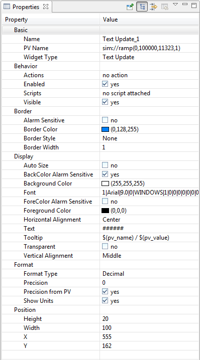

Widget Properties
 The outlooking, behavior, location and size of
widgets are called properties. Properties can be set in property sheet
in editing mode, and could also be changed in attached rules or
scripts in Runtime. The value of the any property can be accessed with
Property Macro via property_id.
In most cases, the property_id is following this convention
corresponding to the property name:
- lower case of all characters
- replace space with underscore.
For Example: The property_id of "Foreground Color" is
"foreground_color".
Properties Common to All Widgets
Few properties may be hidden for some particular widgets on purpose.
Property id is shown in braces, which can be used to access the
property in Rules or
Scripts.
- Basic
- Name(name). The name of the widget.
- Widget Type(widget_type). The type of the widget. This
property that is not editable. The name and type of the selected
widget will also be displayed on the status bar.
- Widget Class(widget_class). A string or PV type property. If the value of
the property can be resolved to a string (widget class) the opi schema
is searched for the widget of the same type and the resolved widget class.
If found the properties of the schema widget are applied to this widget.
- Behavior
- Actions(actions). The actions assocaited with the widget.
- Enabled(enabled). A disabled control widget is not
operatable.
- Rules(rules). The rules attached
to the widget.
- Scripts(scripts). The scripts
attached to the widget.
- Visible(visible). Visibility of the widget.
- Border
- Border Color(border_color). The color of the border.
- Border Style(border_style). The style of the border.
- Border width(border_width). The width of the border. Only
meaningful for line or dot line styles.
- Display
- Background Color(background_color). Color of Background.
- Foreground Color(foreground_color). Color of foreground. In
most cases, it is the font color too.
- Tooltip(tooltip). Tooltip of the widget. Macros are allowed
and can be updated when tooltip is shown again. The property macro
$(pv_value) could be used to show the PV value which has timestamp,
value, severity and status.
- Position
- Height(height). The height of the widget in pixels.
- Width(width). The width of the widget in pixels.
- X(x). X location coordinate in pixels. The zero point of
the coordinate system is on the left-top cornor. Negative
coordinate is allowed, but is not recommended.
- Y(y). Y location coordinate in pixels
- Scale Options (scale_options). The options to control the
scale behavior of the widget.